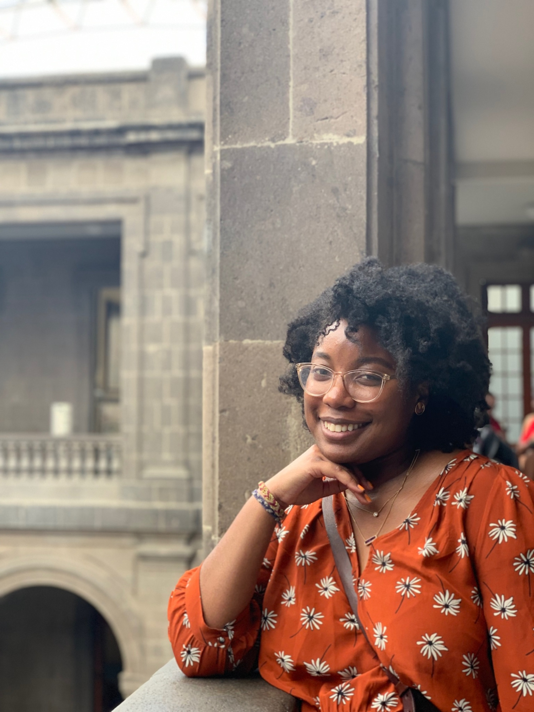

About
Brittany Taylor is an Originals Marketing strategist based in Los Angeles.
Her work explores the intersection of audience behavior, cultural conversation, and creative storytelling across television and streaming.
Across launch strategy, experiential activations, fan engagement, social storytelling, partnerships, and awards campaigns, she helps translate insight into ideas that create anticipation, earn attention, and give audiences a reason to care.